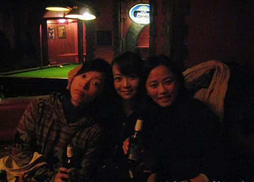

假期，这就完了？！ @ Jan 04, 2010
新年第二天补了5颗牙，错误的刷牙方式造成的问题。惊讶吧？赶紧谷谷一下正确的刷牙方式，以及转达医生的建议：尝试用儿童牙刷吧，虽然效率低，但是既轻柔又能刷到最里面的牙，并且在嘴角位置上下刷也有空间。大忽悠小姐的建议是：赶紧用电动牙刷啊，怎么还不用电动牙刷呢？这5颗牙正好位于嘴角两边，因为上下刷不方便就偷懒横着刷，长年累月横着刷它们，结果牙根被刷出来了，我伺候这口牙还真卖力啊。。。都怪俺娘吃的四环素，害得俺这牙怎么刷都白不了，还刷出了问题！这是牙齿美容都解决不了的属于70年代生人的老大难问题。
新年第三天的晚上，在又一次诚挚地召唤下，我还是精心打扮一番去赴听歌会的。好久没去酒吧，怎么着也要端正一下态度，结果在寒风中就穿了件衬衣和大衣的我以及我们苦等近一小时，门口的长队才有往门内蠕动的迹象。这是一个我不认识他他也不认识我的美国民谣歌手，整场听下来还不错，只是没有各女友的魅力大，大到我们热烈地聊天哈哈大笑被人训斥。。。好歹也是一次体验，这难得相见的兴奋感完全淹没了帅哥歌手的吸引（默默的说一句：前天不是才见面的么）。
那个极其卡哇伊的女生，灰常灰常卡哇伊，yeah~
还有两位女友在相机后面儿。

额滴神呐，烦不了了，手机、卡片机的效果差不到哪儿去挖，至少知道左边那个是卡哇伊，右边那位是知性又随和的大S。只有用她们的头挡住我那张大圆脸，才敢和小脸MM一起合影啊！以及怀疑我那SONY卡片机的设置有问题，画面颗粒多。


15 Responses to “假期，这就完了？！”
2010-01-04
小她是酷到毙，不能用卡哇伊形容。HAHA
2010-01-04
拜托，我在形容你，好不好啊！
我晓得“酷”是什么摸样，行不行啊！
2010-01-04
我走眼了。。。不过我我。。也不能这个词吧，太不敢接了。你就夸我“混搭过关”吧，我就很满足达。
2010-01-04
我们这群朋友混搭也过关啦，瞧瞧！里面什么风格都有，勾搭在一起还挺河蟹，哈哈哈哈~
2010-01-04
最后一张太美妙了~
2010-01-04
因为有你才成全了美妙的瞬间！
2010-01-04
因为找“茶”,
又找见了你,
温馨一如7年前,
明丽, 清新, 漂亮,
中国茶,
我喜欢的味道!
2010-01-04
都是时尚美女哦。
2010-01-04
茶越来越知性美了.喜欢.
2010-01-04
美女成群……养眼……
试试看用牙缝刷（我个人不喜欢牙线，用起来很美的女生也会面目狰狞），可以把牙缝间的东西都刷干净，减少发言口臭的纪律，对牙龈也有好处。
2010-01-04
笑不露齿，是为淑女风范
岁月的痕迹到处都有，牙根易损不一定是刷牙不当的结果，应该是市口腔医院做的吧，当然软质刷最好。还是建议查查牙本质，注意饮食习惯。
实在不行，镶个铂金牙套也不错:)
2010-01-05
(我们热烈地聊天哈哈大笑被人训斥)
You ladies been told “Shut up! We got Show to watch”?
2010-01-05
一群美女出去，不闹腾哪还算什么：）
2010-01-05
脸色不好，请注意休息。
2010-01-06
还是中间那位红唇抢眼啊，太美了！大爱
Leave A Reply
存档只读，评论已关闭。